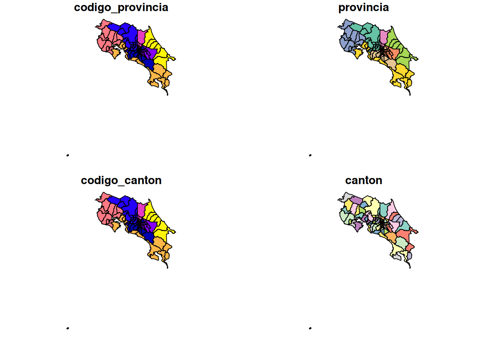
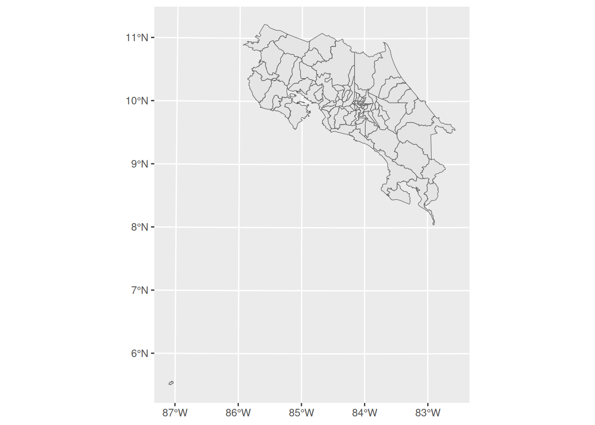
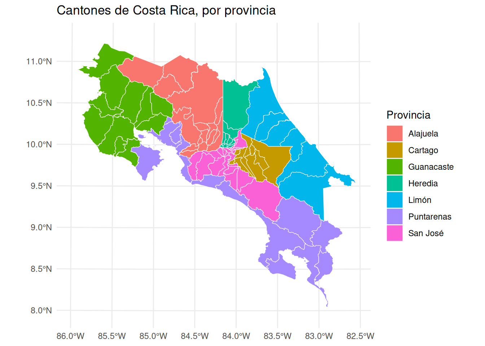
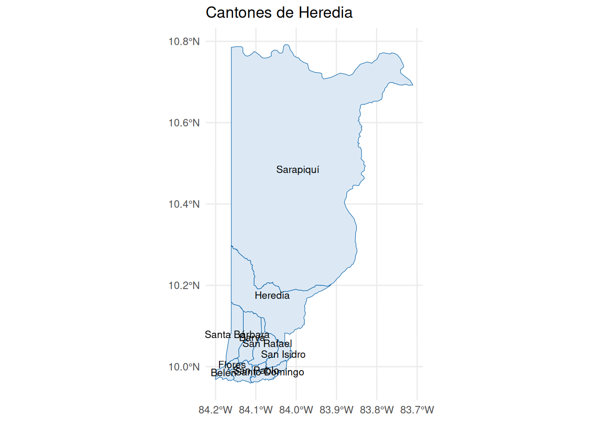
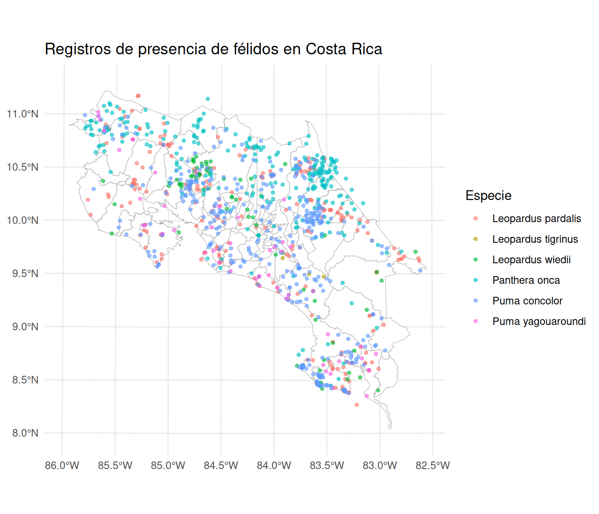
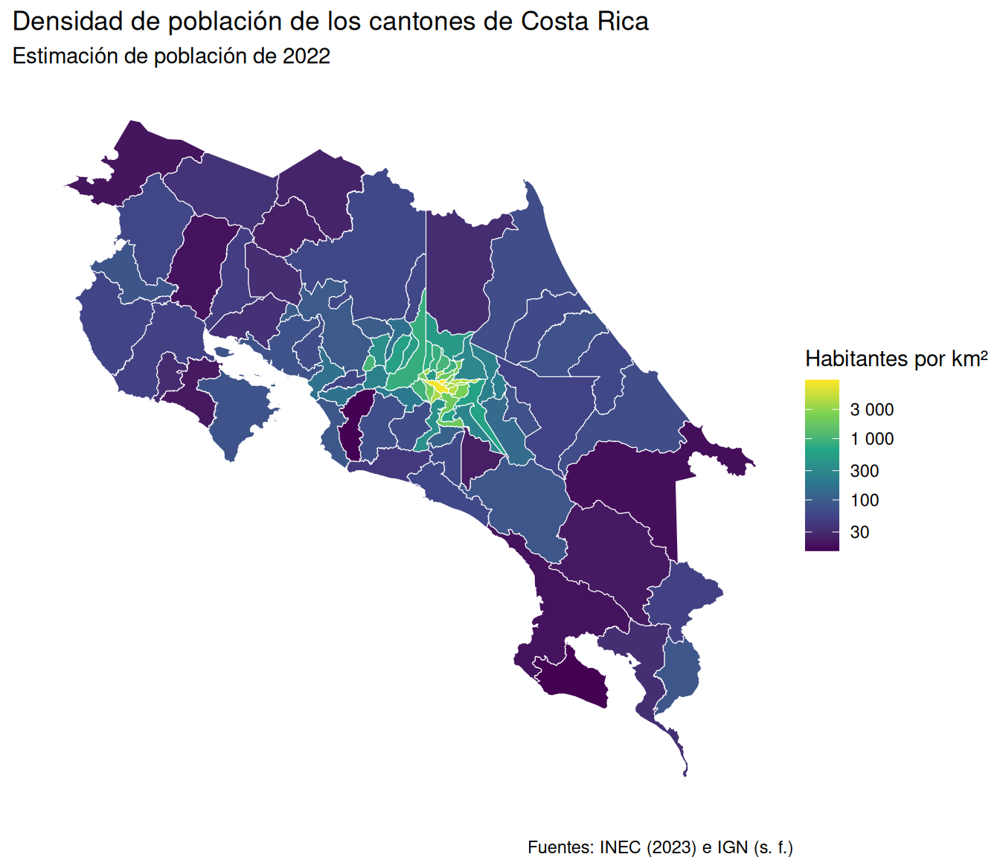
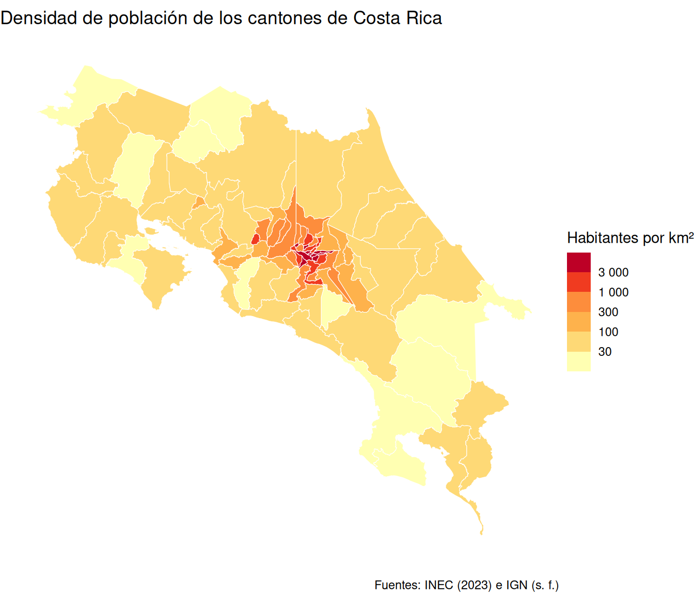
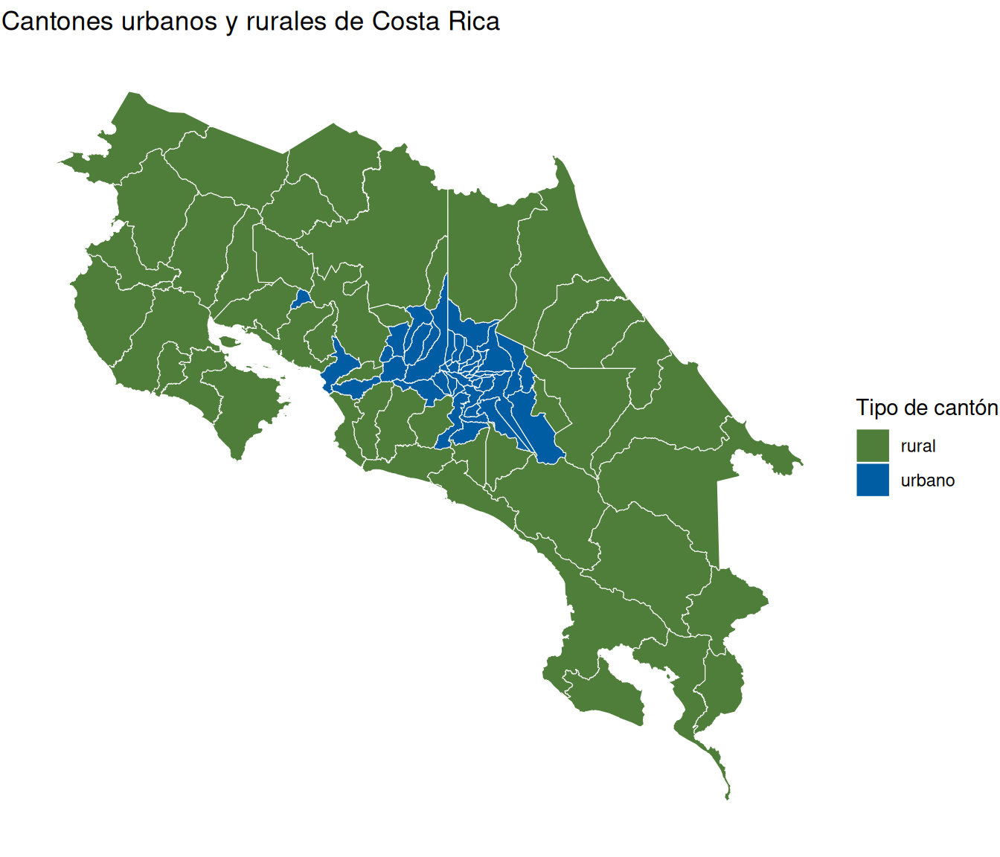

library(tidyverse)
library(sf)
cantones <- read_csv("https://raw.githubusercontent.com/pf0953-programacionr/2026-ii/main/datos/cantones.csv") |>
mutate(
densidad = poblacion / area_km2,
tipo = if_else(densidad > 100, "urbano", "rural")
)sf: datos geoespaciales vectoriales
Trabajo previo
Lecturas
Antes de la clase, revise las siguientes lecturas. Las dos primeras son los capítulos 1 y 2 de Geocomputation with R, el libro de referencia de esta sección, asignados por el programa del curso: el primero presenta la geocomputación y el ecosistema geoespacial de R, y del segundo interesa la sección 2.2, sobre los datos vectoriales y el paquete sf (la sección 2.3, sobre rasters, es lectura complementaria). La tercera es la primera viñeta de la documentación de sf, por su autor, y presenta la estructura de los objetos sf con ejemplos cortos.
Lovelace, R., Nowosad, J., y Münchow, J. (2025). Introduction. En Geocomputation with R (2.ª ed.). Chapman and Hall/CRC. https://r.geocompx.org/intro
Lovelace, R., Nowosad, J., y Münchow, J. (2025). Geographic data in R. En Geocomputation with R (2.ª ed.). Chapman and Hall/CRC. https://r.geocompx.org/spatial-class
Pebesma, E. (s. f.). Simple features for R. En sf: Simple features for R. Recuperado el 11 de octubre de 2026, de https://r-spatial.github.io/sf/articles/sf1.html
Otros recursos
Antes de la clase, instale el paquete ejecutando en la consola de RStudio install.packages("sf"). En Windows y macOS se instala una versión precompilada que incluye las bibliotecas GDAL, GEOS y PROJ, y tarda unos minutos; en Linux hay que instalar antes esas bibliotecas con el gestor de paquetes del sistema (las instrucciones están en la página de instalación de sf). Compruebe la instalación con library(sf): debe mostrar un mensaje con las versiones de GEOS, GDAL y PROJ. Tenga a mano el proyecto pf0953 y el capítulo anterior, que presenta los conceptos que aquí se usan; la hoja de referencia de sf es útil mientras se practica.
Introducción
El capítulo anterior presentó los conceptos: el modelo vectorial, el estándar Simple Features, los sistemas de referencia de coordenadas (SRC) y los formatos de archivo. Este los pone en práctica con sf, el paquete de R para datos geoespaciales vectoriales, creado por Edzer Pebesma en 2016 (Pebesma, 2018). Su nombre proviene del estándar Simple Features, que implementa; y, como se adelantó en el capítulo de tidyverse, sigue las convenciones del tidyverse sin formar parte de él, por lo que todo lo aprendido sobre dplyr y ggplot2 se aprovecha sin cambios.
La idea central del paquete cabe en una frase: un objeto sf es un data frame con una columna de geometrías. Cada fila es una entidad geográfica (un cantón, un registro de presencia de una especie), las columnas son sus atributos (el nombre, la población, la fecha) y una columna especial, por lo general llamada geometry o geom, contiene la geometría de cada fila: un punto, una línea o un polígono. Por eso filter(), select(), left_join() y group_by() funcionan con un objeto sf como con cualquier otro data frame, y la geometría acompaña a los datos en cada operación. Por debajo, sf se apoya en tres bibliotecas de software que usan casi todas las herramientas geoespaciales, incluidos QGIS y PostGIS: GDAL, que lee y escribe los formatos de archivo; GEOS, que ejecuta las operaciones geométricas; y PROJ, que transforma coordenadas entre SRC.
Este capítulo cubre lo que hace falta para empezar: leer una capa, entender su estructura, dibujarla con ggplot2, convertir una tabla con coordenadas en puntos, manejar el SRC, unir la capa con datos tabulares y producir un mapa de coropletas. El capítulo siguiente trata las operaciones espaciales (relaciones entre capas, uniones espaciales, zonas de influencia, agregación) y, más adelante, el de leaflet produce mapas interactivos a partir de los mismos objetos. Los datos son los del hilo conductor del curso —los cantones de Costa Rica (INEC, 2023)— ahora con sus polígonos, publicados por el Instituto Geográfico Nacional (IGN, s. f.), más un conjunto de datos de puntos: registros de presencia de félidos silvestres descargados de GBIF (GBIF.org, 2026), como en el ejemplo de la semana 1. Los tres archivos están descritos en el directorio de datos del repositorio del curso.
Al cargar sf aparece un mensaje como Linking to GEOS 3.12.1, GDAL 3.8.4, PROJ 9.4.0; sf_use_s2() is TRUE: indica las versiones de las tres bibliotecas y que el paquete usa la biblioteca s2 para las geometrías en coordenadas geográficas. No es un error; como en los capítulos anteriores, message: false lo oculta en el documento.
Lectura de capas vectoriales
La función st_read() lee cualquier formato vectorial que GDAL conozca —GeoPackage, shapefile, GeoJSON, KML y muchos más— desde una ruta local o desde una URL, y devuelve un objeto sf. Casi todas las funciones de sf empiezan con el prefijo st_ (de spatial type, heredado de PostGIS), lo que facilita encontrarlas con el autocompletado de RStudio. La capa de cantones del IGN, en formato GeoPackage:
cantones_sf <- st_read("https://raw.githubusercontent.com/pf0953-programacionr/2026-ii/main/datos/cantones.gpkg")Reading layer `cantones' from data source
`https://raw.githubusercontent.com/pf0953-programacionr/2026-ii/main/datos/cantones.gpkg'
using driver `GPKG'
Simple feature collection with 84 features and 4 fields
Geometry type: MULTIPOLYGON
Dimension: XY
Bounding box: xmin: 156147.8 ymin: 608898.4 xmax: 658877.1 ymax: 1241118
Projected CRS: CR-SIRGAS / CRTM05El mensaje describe lo que se leyó: la capa cantones, con el controlador (driver) GPKG, 84 entidades (features, las filas) y 4 campos (fields, las columnas de atributos); el tipo de geometría, MULTIPOLYGON; la extensión (bounding box), el rectángulo que encierra todas las geometrías; y el SRC, proyectado, CR-SIRGAS / CRTM05. Con quiet = TRUE el mensaje se omite. Al imprimir el objeto se repite ese encabezado y se muestran las primeras filas:
cantones_sfSimple feature collection with 84 features and 4 fields
Geometry type: MULTIPOLYGON
Dimension: XY
Bounding box: xmin: 156147.8 ymin: 608898.4 xmax: 658877.1 ymax: 1241118
Projected CRS: CR-SIRGAS / CRTM05
First 10 features:
codigo_provincia provincia codigo_canton canton
1 1 San José 101 San José
2 1 San José 102 Escazú
3 1 San José 103 Desamparados
4 1 San José 104 Puriscal
5 1 San José 105 Tarrazú
6 1 San José 106 Aserrí
7 1 San José 107 Mora
8 1 San José 108 Goicoechea
9 1 San José 109 Santa Ana
10 1 San José 110 Alajuelita
geom
1 MULTIPOLYGON (((481030.3 11...
2 MULTIPOLYGON (((479844.9 11...
3 MULTIPOLYGON (((494091.2 10...
4 MULTIPOLYGON (((455732.1 10...
5 MULTIPOLYGON (((501118.6 10...
6 MULTIPOLYGON (((491211.1 10...
7 MULTIPOLYGON (((456885.8 10...
8 MULTIPOLYGON (((512379.4 11...
9 MULTIPOLYGON (((479218 1102...
10 MULTIPOLYGON (((486917.3 10...Es un data frame de 84 filas con las columnas codigo_provincia, provincia, codigo_canton, canton y geom, y esta última contiene un multipolígono por cantón, impreso en WKT y abreviado. Las coordenadas son números de seis y siete cifras: metros en la proyección CRTM05, como se vio en el capítulo anterior. Tres funciones describen la parte geoespacial del objeto:
class(cantones_sf)[1] "sf" "data.frame"st_geometry(cantones_sf)Geometry set for 84 features
Geometry type: MULTIPOLYGON
Dimension: XY
Bounding box: xmin: 156147.8 ymin: 608898.4 xmax: 658877.1 ymax: 1241118
Projected CRS: CR-SIRGAS / CRTM05
First 5 geometries:MULTIPOLYGON (((481030.3 1102633, 481510.3 1101...MULTIPOLYGON (((479844.9 1102670, 479982.5 1102...MULTIPOLYGON (((494091.2 1094937, 494448.5 1094...MULTIPOLYGON (((455732.1 1095962, 456519.2 1095...MULTIPOLYGON (((501118.6 1074476, 502324 107457...st_crs(cantones_sf)$epsg[1] 8908class()muestra que el objeto es a la vez de la clasesfy de la clasedata.frame: lo primero le da las funciones geoespaciales; lo segundo, todas las de los data frames.st_geometry()extrae la columna de geometrías, cualquiera que sea su nombre (geomaquí;geometryen otros archivos), como un objeto de la clasesfc(simple feature column).st_crs()devuelve el SRC completo; con$epsgse obtiene solo el código, más cómodo de comparar. Se retoma en la sección sobre SRC.
Un archivo GeoPackage puede contener varias capas; st_layers() las lista, y el argumento layer de st_read() elige una. Para un shapefile se indica la ruta del archivo .shp (los demás archivos del conjunto deben estar en el mismo directorio) y para un GeoJSON, la del archivo .geojson. Las capas publicadas como servicios WFS se leen con la URL del servicio, como en el ejemplo siguiente (que no se ejecuta en el curso, para no depender de la disponibilidad del SNIT):
# Capa de cantones del SNIT, directamente del servicio WFS del IGN
cantones_wfs <- st_read(
"WFS:https://geos.snitcr.go.cr/be/IGN_5_CO/wfs",
layer = "IGN_5_CO:limitecantonal_5k"
)Ejercicios de esta sección: ejercicios sobre lectura y estructura.
Un objeto sf es un data frame
Todos los verbos de dplyr funcionan con un objeto sf y el resultado conserva la geometría. Los cantones de Heredia:
cantones_sf |>
filter(provincia == "Heredia")Simple feature collection with 10 features and 4 fields
Geometry type: MULTIPOLYGON
Dimension: XY
Bounding box: xmin: 478085.5 ymin: 1101260 xmax: 531727.6 ymax: 1193308
Projected CRS: CR-SIRGAS / CRTM05
codigo_provincia provincia codigo_canton canton
1 4 Heredia 401 Heredia
2 4 Heredia 402 Barva
3 4 Heredia 403 Santo Domingo
4 4 Heredia 404 Santa Bárbara
5 4 Heredia 405 San Rafael
6 4 Heredia 406 San Isidro
7 4 Heredia 407 Belén
8 4 Heredia 408 Flores
9 4 Heredia 409 San Pablo
10 4 Heredia 410 Sarapiquí
geom
1 MULTIPOLYGON (((482438.7 11...
2 MULTIPOLYGON (((486302.1 11...
3 MULTIPOLYGON (((497196.3 11...
4 MULTIPOLYGON (((482367 1123...
5 MULTIPOLYGON (((490951.6 11...
6 MULTIPOLYGON (((495645.2 11...
7 MULTIPOLYGON (((480648.1 11...
8 MULTIPOLYGON (((483152.5 11...
9 MULTIPOLYGON (((491777.7 11...
10 MULTIPOLYGON (((496954.9 11...El resultado es otro objeto sf, de 10 entidades, y su extensión se recalculó: ahora encierra solo esa provincia. Con select() ocurre algo particular: la columna de geometría siempre se conserva, aunque no se pida, porque sin ella el objeto dejaría de ser geoespacial:
cantones_sf |>
select(canton)Simple feature collection with 84 features and 1 field
Geometry type: MULTIPOLYGON
Dimension: XY
Bounding box: xmin: 156147.8 ymin: 608898.4 xmax: 658877.1 ymax: 1241118
Projected CRS: CR-SIRGAS / CRTM05
First 10 features:
canton geom
1 San José MULTIPOLYGON (((481030.3 11...
2 Escazú MULTIPOLYGON (((479844.9 11...
3 Desamparados MULTIPOLYGON (((494091.2 10...
4 Puriscal MULTIPOLYGON (((455732.1 10...
5 Tarrazú MULTIPOLYGON (((501118.6 10...
6 Aserrí MULTIPOLYGON (((491211.1 10...
7 Mora MULTIPOLYGON (((456885.8 10...
8 Goicoechea MULTIPOLYGON (((512379.4 11...
9 Santa Ana MULTIPOLYGON (((479218 1102...
10 Alajuelita MULTIPOLYGON (((486917.3 10...Cuando se quiere solo la tabla de atributos —para mostrarla con knitr::kable() o datatable(), o para unirla a otra tabla—, st_drop_geometry() la quita y devuelve un data frame ordinario. Los cantones por provincia, con count():
cantones_sf |>
st_drop_geometry() |>
count(provincia, sort = TRUE) provincia n
1 San José 20
2 Alajuela 16
3 Puntarenas 13
4 Guanacaste 11
5 Heredia 10
6 Cartago 8
7 Limón 6El conteo funcionaría también sin quitar la geometría, pero con una diferencia importante que se verá en el capítulo siguiente: summarize() y count() sobre un objeto sf unen las geometrías de cada grupo, lo que aquí produciría el polígono de cada provincia, con el costo de cálculo correspondiente. Para resúmenes puramente tabulares, st_drop_geometry() primero.
Ejercicios de esta sección: ejercicios sobre lectura y estructura.
Mapas con ggplot2
La forma más rápida de ver una capa es plot(), la función de gráficos de R base, que sf adapta para dibujar mapas. Tiene una particularidad que sorprende la primera vez: dibuja un mapa por cada columna de atributos, coloreado según sus valores:
plot(cantones_sf)
Para ver solo las geometrías se le pasa st_geometry(), y para un solo atributo, el objeto con la columna entre corchetes (cantones_sf["provincia"]). plot() es suficiente para explorar; para comunicar se usa ggplot2, con lo aprendido en el capítulo correspondiente y una geometría nueva, geom_sf(), que dibuja puntos, líneas o polígonos según lo que contenga la columna de geometrías, sin que haga falta mapear x ni y:
ggplot(cantones_sf) +
geom_sf()
Dos observaciones. Primera: aunque las coordenadas de la capa están en metros, los ejes muestran grados de longitud y latitud: geom_sf() dibuja los datos en su propio SRC, pero rotula los ejes con una retícula (graticule) geográfica. Segunda: el país ocupa menos de la mitad del mapa y hay un punto diminuto en la esquina inferior izquierda. Es la Isla del Coco, parte del cantón de Puntarenas, a unos 500 km de la costa: como está en la capa, la extensión la incluye. Para centrar el mapa en el territorio continental se fijan los límites de los ejes con coord_sf(), en las unidades del SRC de los datos (metros de CRTM05); las estéticas y los argumentos son los de siempre (fill para el relleno de los polígonos, color para sus bordes, linewidth para el grosor de la línea), y los temas también:
ggplot(cantones_sf) +
geom_sf(aes(fill = provincia), color = "white", linewidth = 0.2) +
coord_sf(xlim = c(280000, 660000), ylim = c(880000, 1250000)) +
labs(title = "Cantones de Costa Rica, por provincia", fill = "Provincia") +
theme_minimal()
Como en cualquier gráfico de ggplot2, aes(fill = provincia) mapea una columna al relleno y produce una leyenda; fill = "gray90", fuera de aes(), lo fija. Los rótulos se agregan con geom_sf_text() (o geom_sf_label(), con fondo), que coloca el texto en un punto interior de cada polígono. Los cantones de Heredia, con sus nombres:
cantones_sf |>
filter(provincia == "Heredia") |>
ggplot() +
geom_sf(fill = "#dce9f5", color = "#005da4") +
geom_sf_text(aes(label = canton), size = 3) +
labs(title = "Cantones de Heredia", x = NULL, y = NULL) +
theme_minimal()
Los nombres de los cantones pequeños del sur de la provincia se superponen; en un mapa para presentar, se resuelve con un acercamiento (coord_sf()), con un tamaño de letra menor o con un mapa interactivo, como los de leaflet. Y theme_void() quita por completo los ejes y la retícula, lo que es habitual en los mapas temáticos.
Ejercicios de esta sección: ejercicios sobre mapas.
De una tabla con coordenadas a un objeto sf
Los datos de puntos rara vez llegan como capa geoespacial: lo usual es un CSV con dos columnas de coordenadas, como los registros de GBIF de la semana 1, los datos de estaciones o de encuestas, o los que cada estudiante recopile para la tarea 3. El archivo de félidos del repositorio del curso es un ejemplo: 1 041 registros de presencia de seis especies de félidos silvestres en Costa Rica, con las columnas decimalLongitude y decimalLatitude en WGS84, como entrega GBIF.
felidos <- read_csv("https://raw.githubusercontent.com/pf0953-programacionr/2026-ii/main/datos/felidos.csv")
felidos# A tibble: 1,041 × 9
gbifID species basisOfRecord eventDate year stateProvince locality
<dbl> <chr> <chr> <chr> <dbl> <chr> <chr>
1 476859057 Leopardus pa… PRESERVED_SP… 1928 1928 Cartago Turrial…
2 476861450 Leopardus pa… PRESERVED_SP… 1928 1928 Cartago Turrial…
3 5146956266 Leopardus pa… PRESERVED_SP… 1932-01-… 1932 San Jose vicinit…
4 5147044265 Leopardus pa… PRESERVED_SP… 1932-06-… 1932 San Jose vicinit…
5 1122686047 Leopardus pa… PRESERVED_SP… 1958-06 1958 Limon N/A
6 45869265 Leopardus pa… PRESERVED_SP… 1963-02-… 1963 Puntarenas P… Gromaco…
7 1065425532 Leopardus pa… PRESERVED_SP… 1963-04-… 1963 Guanacaste P… San Jua…
8 1065369705 Leopardus pa… PRESERVED_SP… 1964-10-… 1964 Puntarenas P… Potrero…
9 4174649366 Leopardus pa… PRESERVED_SP… 1965-06-… 1965 Puntarenas 14 km N…
10 45869301 Leopardus pa… PRESERVED_SP… 1965-06-… 1965 Puntarenas P… 14 km N…
# ℹ 1,031 more rows
# ℹ 2 more variables: decimalLongitude <dbl>, decimalLatitude <dbl>st_as_sf() convierte el data frame en un objeto sf a partir de las columnas de coordenadas, indicadas en coords, y del SRC en que están esas coordenadas, en crs:
felidos_sf <- st_as_sf(
felidos,
coords = c("decimalLongitude", "decimalLatitude"),
crs = 4326
)
felidos_sfSimple feature collection with 1041 features and 7 fields
Geometry type: POINT
Dimension: XY
Bounding box: xmin: -85.8 ymin: 8.268703 xmax: -82.61173 ymax: 11.17616
Geodetic CRS: WGS 84
# A tibble: 1,041 × 8
gbifID species basisOfRecord eventDate year stateProvince locality
* <dbl> <chr> <chr> <chr> <dbl> <chr> <chr>
1 476859057 Leopardus pa… PRESERVED_SP… 1928 1928 Cartago Turrial…
2 476861450 Leopardus pa… PRESERVED_SP… 1928 1928 Cartago Turrial…
3 5146956266 Leopardus pa… PRESERVED_SP… 1932-01-… 1932 San Jose vicinit…
4 5147044265 Leopardus pa… PRESERVED_SP… 1932-06-… 1932 San Jose vicinit…
5 1122686047 Leopardus pa… PRESERVED_SP… 1958-06 1958 Limon N/A
6 45869265 Leopardus pa… PRESERVED_SP… 1963-02-… 1963 Puntarenas P… Gromaco…
7 1065425532 Leopardus pa… PRESERVED_SP… 1963-04-… 1963 Guanacaste P… San Jua…
8 1065369705 Leopardus pa… PRESERVED_SP… 1964-10-… 1964 Puntarenas P… Potrero…
9 4174649366 Leopardus pa… PRESERVED_SP… 1965-06-… 1965 Puntarenas 14 km N…
10 45869301 Leopardus pa… PRESERVED_SP… 1965-06-… 1965 Puntarenas P… 14 km N…
# ℹ 1,031 more rows
# ℹ 1 more variable: geometry <POINT [°]>Las dos columnas de coordenadas desaparecieron y en su lugar hay una columna geometry con un punto por registro; el SRC es geodésico (geográfico), WGS 84, y la extensión está en grados. Dos detalles causan errores frecuentes. El orden en coords es x, y, es decir, longitud, latitud: al revés del «latitud, longitud» con que suelen escribirse las coordenadas, y si se invierte, los puntos quedan en la Antártida. Y crs es indispensable: sin él, el objeto se crea, pero no tiene SRC, por lo que no se puede reproyectar ni combinar con otras capas. Los datos de GBIF, de GPS y de casi cualquier fuente que hable de «latitud y longitud» están en WGS84, EPSG:4326.
Para dibujar los puntos sobre los cantones se agregan dos capas de geom_sf(), cada una con sus datos, como las capas de puntos y texto del capítulo de ggplot2:
ggplot() +
geom_sf(data = cantones_sf, fill = "white", color = "gray70") +
geom_sf(data = felidos_sf, aes(color = species), size = 1, alpha = 0.6) +
coord_sf(xlim = c(280000, 660000), ylim = c(880000, 1250000)) +
labs(title = "Registros de presencia de félidos en Costa Rica", color = "Especie") +
theme_minimal()
Las dos capas se superponen correctamente aunque una esté en metros y la otra en grados: ggplot2 reproyecta todas las capas al SRC de la primera para dibujarlas. Es una comodidad del dibujo, no una regla general: en las operaciones espaciales del capítulo siguiente, las capas deben estar en el mismo SRC. Y el mapa ya responde preguntas: los registros de jaguar (Panthera onca) se concentran en las llanuras del Caribe norte, en Guanacaste y en la península de Osa, y los de puma (Puma concolor) se reparten por casi todo el país. Para responder «¿cuántos registros hay en cada cantón?» no sirve la columna stateProvince del archivo (tiene valores como «Puntarenas», «Puntarenas Prov» y «Puntarenas Province», y 421 registros sin provincia): hace falta averiguar en cuál polígono cae cada punto, una unión espacial, tema del capítulo siguiente.
Ejercicios de esta sección: ejercicios sobre puntos.
Sistemas de referencia de coordenadas
El SRC de una capa se consulta con st_crs() y se cambia, reproyectando todas sus geometrías, con st_transform(), que recibe un código EPSG y devuelve una capa nueva. Los cantones en WGS84:
cantones_wgs84 <- st_transform(cantones_sf, 4326)
st_bbox(cantones_sf) xmin ymin xmax ymax
156147.8 608898.4 658877.1 1241118.2 st_bbox(cantones_wgs84) xmin ymin xmax ymax
-87.101923 5.499144 -82.552871 11.219639 Son los mismos cantones, con la extensión en metros desde el origen de la proyección y en grados de longitud y latitud. st_crs() también compara SRC, lo que conviene hacer antes de combinar dos capas:
st_crs(felidos_sf) == st_crs(cantones_sf)[1] FALSEst_crs(felidos_sf) == st_crs(cantones_wgs84)[1] TRUELa consecuencia práctica más importante del SRC es la medición. st_area() calcula el área de cada geometría, y el resultado lleva sus unidades, gracias al paquete units: metros cuadrados, porque CRTM05 está en metros. Con units::set_units() se convierten a kilómetros cuadrados, y con as.numeric() se obtiene el número sin unidades, que es lo que conviene dentro de mutate():
areas <- st_area(cantones_sf)
head(areas, 3)Units: [m^2]
[1] 44718373 34607013 119293514head(units::set_units(areas, km^2), 3)Units: [km^2]
[1] 44.71837 34.60701 119.29351Los 44,7 km² de San José coinciden con los 44,62 km² del INEC. Si se calcula el área de cantones_wgs84, sf no devuelve grados cuadrados sin sentido: como las coordenadas son geográficas, calcula el área sobre una esfera con la biblioteca s2, y el resultado (44,9 km²) es una aproximación razonable, pero no la medida oficial. La regla del capítulo anterior sigue vigente: para medir en Costa Rica, CRTM05.
Ejercicios de esta sección: ejercicios sobre sistemas de referencia de coordenadas.
Unión con datos tabulares
La capa del IGN trae la geometría y unos pocos atributos; la población y el área están en la tabla del INEC, cantones, que se usa desde la sección II. Las dos fuentes identifican los cantones por el nombre de la provincia y el del cantón, así que se unen con left_join(), como cualquier par de tablas, con una regla: el objeto sf va a la izquierda. Si el objeto sf está a la derecha, el resultado es un data frame ordinario en el que la geometría es una columna más, sin funciones geoespaciales.
cantones_union <- cantones_sf |>
left_join(cantones, by = c("provincia", "canton"))
sum(is.na(cantones_union$poblacion))[1] 2Dos cantones quedaron sin población. Como se advirtió en el capítulo de dplyr, una unión no falla cuando las claves no coinciden: deja NA en silencio. anti_join() muestra las filas sin pareja, en las dos direcciones:
anti_join(st_drop_geometry(cantones_sf), cantones, by = c("provincia", "canton")) codigo_provincia provincia codigo_canton canton
1 1 San José 111 Vázquez de Coronado
2 1 San José 120 León Cortés Castroanti_join(cantones, st_drop_geometry(cantones_sf), by = c("provincia", "canton"))# A tibble: 2 × 6
provincia canton poblacion area_km2 densidad tipo
<chr> <chr> <dbl> <dbl> <dbl> <chr>
1 San José Vásquez de Coronado 67078 224. 300. urbano
2 San José León Cortés 13553 122. 111. urbanoEl IGN escribe «Vázquez de Coronado» y «León Cortés Castro»; el INEC, «Vásquez de Coronado» y «León Cortés». Las dos grafías circulan, y es un ejemplo de por qué conviene unir por códigos, cuando existen, y no por nombres: la capa del IGN tiene codigo_canton, pero la tabla del INEC del curso no. Las claves que no coinciden se corrigen antes de unir, en una de las dos tablas; aquí se ajustan los nombres de la capa a los de la tabla del curso, con case_when(), que generaliza if_else() a varias condiciones:
cantones_sf <- cantones_sf |>
mutate(canton = case_when(
canton == "Vázquez de Coronado" ~ "Vásquez de Coronado",
canton == "León Cortés Castro" ~ "León Cortés",
.default = canton
))
cantones_union <- cantones_sf |>
left_join(cantones, by = c("provincia", "canton"))
sum(is.na(cantones_union$poblacion))[1] 0cantones_unionSimple feature collection with 84 features and 8 fields
Geometry type: MULTIPOLYGON
Dimension: XY
Bounding box: xmin: 156147.8 ymin: 608898.4 xmax: 658877.1 ymax: 1241118
Projected CRS: CR-SIRGAS / CRTM05
First 10 features:
codigo_provincia provincia codigo_canton canton poblacion area_km2
1 1 San José 101 San José 352381 44.62
2 1 San José 102 Escazú 71500 34.53
3 1 San José 103 Desamparados 223226 118.89
4 1 San José 104 Puriscal 38525 555.04
5 1 San José 105 Tarrazú 17810 291.27
6 1 San José 106 Aserrí 59588 168.26
7 1 San José 107 Mora 32348 163.48
8 1 San José 108 Goicoechea 132104 31.70
9 1 San José 109 Santa Ana 58020 61.42
10 1 San José 110 Alajuelita 81012 21.47
densidad tipo geom
1 7897.37786 urbano MULTIPOLYGON (((481030.3 11...
2 2070.66319 urbano MULTIPOLYGON (((479844.9 11...
3 1877.58432 urbano MULTIPOLYGON (((494091.2 10...
4 69.40941 rural MULTIPOLYGON (((455732.1 10...
5 61.14602 rural MULTIPOLYGON (((501118.6 10...
6 354.14240 urbano MULTIPOLYGON (((491211.1 10...
7 197.87130 urbano MULTIPOLYGON (((456885.8 10...
8 4167.31861 urbano MULTIPOLYGON (((512379.4 11...
9 944.64344 urbano MULTIPOLYGON (((479218 1102...
10 3773.26502 urbano MULTIPOLYGON (((486917.3 10...Ahora los 84 cantones tienen población, área, densidad y tipo, además de su polígono. La unión permite también verificar la capa contra la fuente oficial: el área que publica el INEC frente a la que se calcula con st_area() sobre los polígonos del IGN.
cantones_union |>
mutate(area_ign_km2 = as.numeric(st_area(geom)) / 1e6, diferencia_km2 = area_ign_km2 - area_km2) |>
st_drop_geometry() |>
select(canton, area_km2, area_ign_km2, diferencia_km2) |>
arrange(desc(abs(diferencia_km2))) |>
head(5) canton area_km2 area_ign_km2 diferencia_km2
1 Puntarenas 1763.39 1787.1586 23.7685665
2 Garabito 316.01 317.2684 1.2584241
3 La Cruz 1385.40 1386.5914 1.1914284
4 Santa Cruz 1320.80 1321.8075 1.0075033
5 Talamanca 2792.23 2793.2053 0.9753288En 83 cantones la diferencia es de 1 km² o menos, atribuible a la simplificación de las geometrías de la capa del curso. Puntarenas difiere en casi 24 km²: la capa del IGN incluye la Isla del Coco y la cifra del INEC no. Verificar los datos aunque provengan de fuentes oficiales, y entender por qué difieren, es parte del trabajo.
Ejercicios de esta sección: ejercicios sobre unión y coropletas.
Mapas de coropletas
Un mapa de coropletas colorea cada polígono según el valor de una variable. En ggplot2 basta con mapear la variable a fill; la escala de color se elige como cualquier otra escala del capítulo de ggplot2. La densidad de población tiene la misma asimetría que la población y el área —muchos valores pequeños y unos pocos enormes—, de modo que con una escala lineal casi todo el país queda del mismo color y solo Tibás destaca; la solución es la misma que entonces: una transformación logarítmica, aquí con el argumento transform de scale_fill_viridis_c().
ggplot(cantones_union) +
geom_sf(aes(fill = densidad), color = "white", linewidth = 0.2) +
scale_fill_viridis_c(transform = "log10", labels = scales::label_number(big.mark = " ")) +
coord_sf(xlim = c(280000, 660000), ylim = c(880000, 1250000)) +
labs(
title = "Densidad de población de los cantones de Costa Rica",
subtitle = "Estimación de población de 2022",
fill = "Habitantes por km²",
caption = "Fuentes: INEC (2023) e IGN (s. f.)"
) +
theme_void()
El mapa muestra lo que las tablas y los gráficos de las secciones anteriores solo sugerían: la densidad alta se concentra en la Gran Área Metropolitana, en un corredor continuo del Valle Central, y cae en todas direcciones hacia las costas y las fronteras; los cantones extensos del norte, del Caribe y del Pacífico sur están entre los menos densos.
La alternativa a la escala continua es clasificar los valores en pocas clases, cada una con un color, como hacen los SIG de escritorio y los mapas impresos. scale_fill_fermenter() lo hace con las paletas de ColorBrewer y acepta la misma transformación; n.breaks sugiere la cantidad de clases:
ggplot(cantones_union) +
geom_sf(aes(fill = densidad), color = "white", linewidth = 0.2) +
scale_fill_fermenter(
palette = "YlOrRd",
direction = 1,
transform = "log10",
n.breaks = 6,
labels = scales::label_number(big.mark = " ")
) +
coord_sf(xlim = c(280000, 660000), ylim = c(880000, 1250000)) +
labs(
title = "Densidad de población de los cantones de Costa Rica",
fill = "Habitantes por km²",
caption = "Fuentes: INEC (2023) e IGN (s. f.)"
) +
theme_void()
La clasificación simplifica la lectura a costa de ocultar las diferencias dentro de cada clase; la cantidad de clases y los cortes cambian el mapa, por lo que conviene indicarlos en la leyenda o en el texto. Y para una variable categórica, como tipo, la escala es discreta y los colores pueden fijarse a mano, como en los gráficos anteriores:
ggplot(cantones_union) +
geom_sf(aes(fill = tipo), color = "white", linewidth = 0.2) +
scale_fill_manual(values = c(rural = "#4f7d3a", urbano = "#005da4")) +
coord_sf(xlim = c(280000, 660000), ylim = c(880000, 1250000)) +
labs(title = "Cantones urbanos y rurales de Costa Rica", fill = "Tipo de cantón") +
theme_void()
Una advertencia de la cartografía temática, que se retoma en los ejercicios: un mapa de coropletas debe mostrar variables normalizadas —densidades, tasas, porcentajes—, no conteos absolutos. Un mapa de la población total colorea de forma más intensa los cantones más poblados, que suelen ser también los más grandes o los más urbanos, y el ojo confunde el tamaño del polígono con la magnitud del fenómeno; la densidad corrige ese efecto. Los conteos absolutos se representan mejor con símbolos proporcionales, que se construyen en el capítulo siguiente a partir de los centroides.
Ejercicios de esta sección: ejercicios sobre unión y coropletas.
Escritura de capas
st_write() guarda un objeto sf en el formato que indique la extensión del archivo. GeoPackage es la opción recomendada, porque conserva el SRC, los tipos de las columnas y los nombres largos; GeoJSON es útil para la web y, por su especificación, debe guardarse en WGS84, por lo que se reproyecta antes. Como con ggsave() en el capítulo de ggplot2, estos bloques se ejecutan una vez (en el documento llevan eval: false) y los archivos quedan en la carpeta del proyecto:
st_write(cantones_union, "cantones-densidad.gpkg")
cantones_union |>
st_transform(4326) |>
st_write("cantones-densidad.geojson")Si el archivo ya existe, st_write() se detiene con un error; delete_dsn = TRUE lo sobrescribe.
Mapas en documentos Quarto
Un mapa de ggplot2 es una figura más: las opciones de figura de Quarto (fig-cap, fig-alt, fig-width, fig-height) funcionan igual y, con una etiqueta que empiece con fig-, el mapa se numera y se cita con @fig-…. Dos particularidades. Los mapas suelen necesitar más alto que los gráficos: Costa Rica es más ancha que alta, pero con la leyenda a la derecha, fig-height: 6 suele quedar bien. Y la lectura de las capas por URL ocurre en cada Render, lo que tarda unos segundos con los archivos del curso; con capas grandes (decenas de megabytes), conviene guardar una versión simplificada o recortada con st_write() y leerla desde el proyecto. Los mapas interactivos, con leaflet, siguen las reglas de los htmlwidgets del capítulo de plotly y DT.
Ejercicios de esta sección: ejercicios sobre publicación, asistentes y datos propios.
Asistentes de IA para generar mapas
Los lineamientos del curso aplican: los asistentes de IA sirven para explicar, depurar, generar y verificar código, se declara su uso y se comprende todo lo que se entrega. Para generar código de mapas, el prompt debe describir el objeto sf —las columnas y, ahora, también el SRC y el tipo de geometría—, pedir el patrón del curso (ggplot2 con geom_sf()) y el resultado debe verificarse con tres comprobaciones específicas: que el código no mezcle SRC en operaciones espaciales (todas las capas en el mismo, reproyectadas antes de medir), que la escala de color sea adecuada a la distribución de la variable (logarítmica o clasificada si es asimétrica; discreta si es categórica) y que la leyenda tenga unidades. Un prompt de ejemplo, con las cuatro partes del capítulo de asistentes:
Actúe como asistente de visualización de datos geoespaciales con R, sf y ggplot2 (rol). Tengo un objeto sf llamado
cantones_union, con un multipolígono por cantón de Costa Rica en el SRC EPSG:8908 (CR-SIRGAS / CRTM05, metros) y las columnasprovincia(texto),canton(texto),poblacion(entero) yarea_km2(decimal) (contexto). Escriba el código de un mapa de coropletas de la población por kilómetro cuadrado de cada cantón, con una paleta secuencial, escala de color logarítmica con etiquetas con separador de miles, bordes blancos, título, leyenda con unidades, fuente de los datos en la nota al pie, sin ejes y con los límites del mapa fijados para excluir la Isla del Coco (tarea). Useggplot(cantones_union) + geom_sf(...)y escalas de ggplot2; no use otros paquetes (formato).
Al verificar el código generado, además de las tres comprobaciones, compare el color de dos o tres cantones conocidos con sus valores en la tabla: Tibás debe ser el más intenso y Talamanca, Puerto Jiménez o Turrubares, los más claros.
Ejercicios de esta sección: ejercicios sobre publicación, asistentes y datos propios.
Clínica de errores
La tabla 1 recoge los problemas más frecuentes al empezar con sf.
| Mensaje o síntoma | Causa | Solución |
|---|---|---|
there is no package called 'sf'
|
El paquete no está instalado. |
install.packages("sf") en la consola, una sola vez. Si la instalación falla en Linux, faltan GDAL, GEOS o PROJ en el sistema.
|
could not find function "st_read"
|
sf está instalado pero no cargado, o el library(sf) está después del bloque que falla.
|
Agregar library(sf) al bloque de preparación.
|
Cannot open "https://…"; The file doesn't seem to exist. con HTTP error code : 404
|
La URL está mal escrita, o no es la URL cruda (Raw) del archivo. | Probar la URL en el navegador: debe descargar el archivo, no mostrar una página de GitHub. |
Opening layer failed
|
El argumento layer nombra una capa que el archivo no contiene.
|
st_layers("archivo.gpkg") lista las capas disponibles.
|
plot() dibuja muchos mapas pequeños
|
Es el comportamiento de plot() con un objeto sf: un mapa por atributo.
|
plot(st_geometry(x)) o x["columna"]; para presentar, ggplot2.
|
| El mapa de ggplot2 es diminuto y hay un punto en una esquina | La extensión incluye la Isla del Coco (o cualquier geometría lejana). |
coord_sf(xlim = …, ylim = …) con los límites en las unidades del SRC.
|
Can't subset columns that don't exist en st_as_sf()
|
Los nombres de coords no son los de las columnas del data frame.
|
Revisar los nombres con names(); en GBIF son decimalLongitude y decimalLatitude.
|
missing values in coordinates not allowed
|
Filas con NA en la longitud o la latitud.
|
filter(!is.na(longitud), !is.na(latitud)) antes de st_as_sf().
|
| Los puntos aparecen en la Antártida o en el océano, lejos del país |
Las columnas de coords están al revés (latitud, longitud).
|
El orden es c("longitud", "latitud"): x, y.
|
cannot transform sfc object with missing crs
|
El objeto no tiene SRC: se creó con st_as_sf() sin crs.
|
Agregar crs = 4326 (o el código que corresponda a las coordenadas).
|
st_crs(x) == st_crs(y) is not TRUE
|
Una operación espacial entre capas con SRC distintos. |
Reproyectar una de ellas con st_transform() al SRC de la otra.
|
Después de left_join() el objeto ya no tiene funciones de sf (geom_sf() falla o la geometría es una columna más)
|
El objeto sf quedó a la derecha de la unión. |
El objeto sf va a la izquierda: capa |> left_join(tabla, by = …).
|
La unión deja NA en las columnas nuevas
|
Claves que no coinciden exactamente (tildes, grafías, espacios). |
anti_join() en las dos direcciones; corregir con case_when() antes de unir, o unir por códigos.
|
| El mapa de coropletas es casi todo de un solo color | Variable asimétrica con escala lineal. |
transform = "log10" en la escala, o clases con scale_fill_fermenter().
|
Discrete value supplied to a continuous scale
|
Se mapeó una columna de texto a fill con una escala continua (viridis_c, fermenter).
|
Usar una escala discreta (scale_fill_viridis_d(), scale_fill_manual(), scale_fill_brewer()).
|
Dataset already exists en st_write()
|
El archivo ya existe. |
delete_dsn = TRUE para sobrescribirlo.
|
| El Render tarda mucho o el HTML pesa decenas de megabytes | Capas muy detalladas leídas y dibujadas en cada Render. |
Simplificar (st_simplify()) o recortar la capa, guardarla con st_write() y leer esa versión.
|
Resumen
- sf implementa el estándar Simple Features en R sobre GDAL, GEOS y PROJ. Un objeto sf es un data frame con una columna de geometrías: los verbos de dplyr funcionan y conservan la geometría;
st_drop_geometry()la quita para trabajar solo con los atributos. st_read()lee cualquier formato vectorial, desde rutas o URL;st_write()escribe, preferiblemente en GeoPackage.st_geometry(),st_crs()yst_bbox()describen la geometría, el SRC y la extensión.- Una tabla con coordenadas se convierte en puntos con
st_as_sf(coords = c("longitud", "latitud"), crs = 4326): en ese orden y con el SRC declarado. st_transform()reproyecta;st_area()mide, con unidades, y se mide en el SRC proyectado de la región (CR-SIRGAS / CRTM05 en Costa Rica). Para dibujar, ggplot2 reproyecta las capas por su cuenta; para las operaciones espaciales, deben estar en el mismo SRC.left_join()une una capa con una tabla con el objeto sf a la izquierda; las claves que no coinciden se detectan conanti_join()y se corrigen antes de unir.geom_sf()dibuja mapas con ggplot2;coord_sf()fija los límites;geom_sf_text()rotula. Un mapa de coropletas mapea una variable normalizada afill, con una escala logarítmica o clasificada (scale_fill_fermenter()) si la variable es asimétrica.
Ejercicios
Los ejercicios se agrupan según la sección del capítulo a la que corresponden y se resuelven en un documento Quarto nuevo del proyecto pf0953, mapas.qmd, con el mismo encabezado YAML de graficos.qmd y un bloque preparacion igual al del inicio del capítulo (más library(plotly) y library(DT) si los usa). Como en los capítulos anteriores, use la provincia y el cantón elegidos como ejemplo propio.
Lectura y estructura
Lea en un objeto
provinciasla capa de provincias del repositorio del curso (https://raw.githubusercontent.com/pf0953-programacionr/2026-ii/main/datos/provincias.gpkg) e imprímalo. ¿Cuántas entidades y cuántos campos tiene, cuál es el tipo de geometría y cuál el SRC? Compare su extensión con la decantones_sf: ¿por qué son casi iguales?Obtenga los cantones de su provincia a partir de
cantones_sfconfilter()y compruebe, imprimiendo el resultado, que sigue siendo un objeto sf y que la extensión cambió. Luego, const_drop_geometry(),select()yknitr::kable(), muestre una tabla con los códigos y los nombres de esos cantones.
Mapas
Dibuje con ggplot2 el mapa de los cantones de su provincia, con un relleno fijo, los bordes del color de su preferencia, el nombre de cada cantón con
geom_sf_text(), título ytheme_minimal()otheme_void(). Si los nombres se superponen, pruebe consizey concoord_sf().Prediga antes de ejecutar qué dibuja cada instrucción: cuántos mapas, de qué colores y con qué leyenda; luego ejecute:
plot(cantones_sf) plot(st_geometry(cantones_sf)) plot(cantones_sf["provincia"]) ggplot(cantones_sf) + geom_sf(aes(fill = codigo_provincia))Después de ejecutar, haga clic aquí para ver la explicación
plot()sobre el objeto completo dibuja un mapa por cada columna de atributos (cuatro), cada uno coloreado según los valores de esa columna, sin leyenda; sobrest_geometry(), un solo mapa con los contornos; sobrecantones_sf["provincia"], un mapa coloreado por provincia, con leyenda. En ggplot2,codigo_provinciaes una columna numérica, de modo que el relleno usa una escala continua (una barra de color de 1 a 7) aunque la variable sea en realidad categórica: para un color por provincia hay que mapearprovincia, que es texto, o convertir el código confactor().
Puntos
A partir de
felidos_sf, cuente los registros por especie y dibuje un mapa con los registros de una especie (la que prefiera) sobre las provincias (provinciasdel ejercicio 1), con los puntos de un color fijo y las provincias rotuladas. ¿En cuáles regiones del país se concentra la especie? Mencione dos.Prediga antes de ejecutar: ¿dónde quedan los puntos si
st_as_sf()recibecoords = c("decimalLatitude", "decimalLongitude")? Compruébelo const_bbox()del resultado y explique los valores. Luego cree el objeto sin el argumentocrs, consultest_crs()e intentest_transform(…, 8908): anote el mensaje de error y búsquelo en la clínica de errores.
Sistemas de referencia de coordenadas
Reproyecte
felidos_sfa CR-SIRGAS / CRTM05 enfelidos_crtm05y comparest_bbox()de los dos objetos: ¿en qué unidades está cada uno y qué tan grandes son los números? Verifique const_crs()que el nuevo objeto tiene el mismo SRC quecantones_sf.Calcule con
st_area()el área de cada provincia en km² (a partir deprovincias) y compárela con la suma dearea_km2de sus cantones en la tablacantones(congroup_by()ysummarize(), y una unión). ¿En cuál provincia es mayor la diferencia y por qué?
Unión y coropletas
Una
provinciascon un resumen por provincia de la tablacantones(población, área y densidad, comoresumen_provinciasdel capítulo de dplyr) y dibuje un mapa de coropletas de la densidad de población de las provincias, con la paleta viridis, los nombres de las provincias y la leyenda con unidades. Compárelo con el mapa de los cantones: ¿qué se gana y qué se pierde al agregar?Dibuje un mapa de coropletas de la población (no de la densidad) de los cantones, con
scale_fill_viridis_c(transform = "log10"), y compárelo con el de la densidad de la sección. ¿Cuáles cantones cambian más de color entre los dos mapas? Explique en un párrafo por qué el mapa de población absoluta puede inducir a error y cuál de los dos conviene publicar.Dibuje el mapa de coropletas de la densidad de los cantones de su provincia, clasificada en cuatro clases con
scale_fill_fermenter()(sin transformación logarítmica, si los valores de su provincia lo permiten), con los nombres de los cantones, título, leyenda con unidades y fuente. ¿Cuál cantón de su provincia es el más denso y cuál el menos denso? Compruébelo conarrange()sobre la tabla.
Publicación, asistentes y datos propios
Dele al mapa del ejercicio 11 un bloque con etiqueta
fig-densidad-provincia,fig-cap,fig-altyfig-height, cítelo en el texto, procesemapas.qmdcon Render y publíquelo en el repositoriopractica-quarto, junto con los documentos anteriores. Compruebe en la dirección pública que el mapa se ve con su leyenda numerada.Pida a un asistente de IA el código del prompt de ejemplo de la sección de asistentes y verifíquelo: lea el código, compruebe que calcula la densidad a partir de las columnas indicadas y no inventa otras, que la escala es logarítmica y la leyenda tiene unidades, que los límites excluyen la Isla del Coco, y compare el color de Tibás, San Carlos y Talamanca con sus densidades en
cantones. Documente en el texto del documento el asistente, el prompt, el código y el resultado de las comprobaciones, como en la declaración de uso de IA de la tarea 2.Para la tarea 3, que agrega el componente geoespacial a los datos de su tema, cargue en un objeto sf la fuente que identificó en el ejercicio 6 del capítulo anterior (con
st_read(), o const_as_sf()si es un CSV con coordenadas), imprímalo, anote su SRC, su cantidad de entidades y su tipo de geometría, y dibújelo sobrecantones_sfoprovincias. Si sus datos son tabulares por cantón, provincia o distrito, únalos a la capa correspondiente y verifique la unión conanti_join(). Anote qué preguntas podría responder al combinarlos con otras capas.
Referencias bibliográficas
GBIF.org. (2026, 11 de octubre). GBIF occurrence search: Felidae, Costa Rica, with coordinates [consulta a la API]. https://www.gbif.org/occurrence/search?country=CR&taxon_key=9703&has_coordinate=true&has_geospatial_issue=false
Instituto Geográfico Nacional. (s. f.). Límite cantonal 1:5000 y Límite provincial 1:5000 [capas WFS]. Sistema Nacional de Información Territorial. Recuperado el 11 de octubre de 2026, de https://geos.snitcr.go.cr/be/IGN_5_CO/wfs
Instituto Nacional de Estadística y Censos. (2023). Resultados de la Estimación de Población y Vivienda 2022 [archivo XLSX]. https://admin.inec.cr/sites/default/files/2023-11/reResultadosEstimacionPoblacionVivienda2022_3.xlsx
Lovelace, R., Nowosad, J., y Münchow, J. (2025). Geocomputation with R (2.ª ed.). Chapman and Hall/CRC. https://r.geocompx.org/
Pebesma, E. (2018). Simple features for R: Standardized support for spatial vector data. The R Journal, 10(1), 439–446. https://doi.org/10.32614/RJ-2018-009
Pebesma, E. (s. f.). sf: Simple features for R. Recuperado el 11 de octubre de 2026, de https://r-spatial.github.io/sf/
Pebesma, E., y Bivand, R. (2023). Spatial data science: With applications in R. Chapman and Hall/CRC. https://r-spatial.org/book/
Pebesma, E., y Bivand, R. (2026). sf: Simple features for R (versión 1.1-1) [paquete de R]. https://CRAN.R-project.org/package=sf
Wickham, H., Navarro, D., y Pedersen, T. L. (2025). Maps. En ggplot2: Elegant graphics for data analysis (3.ª ed.). https://ggplot2-book.org/maps